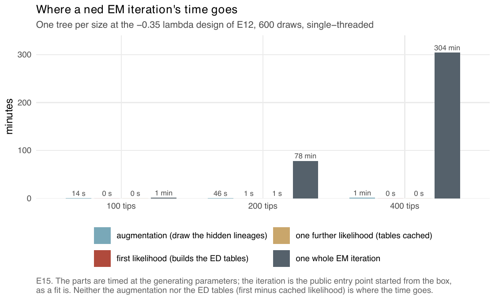
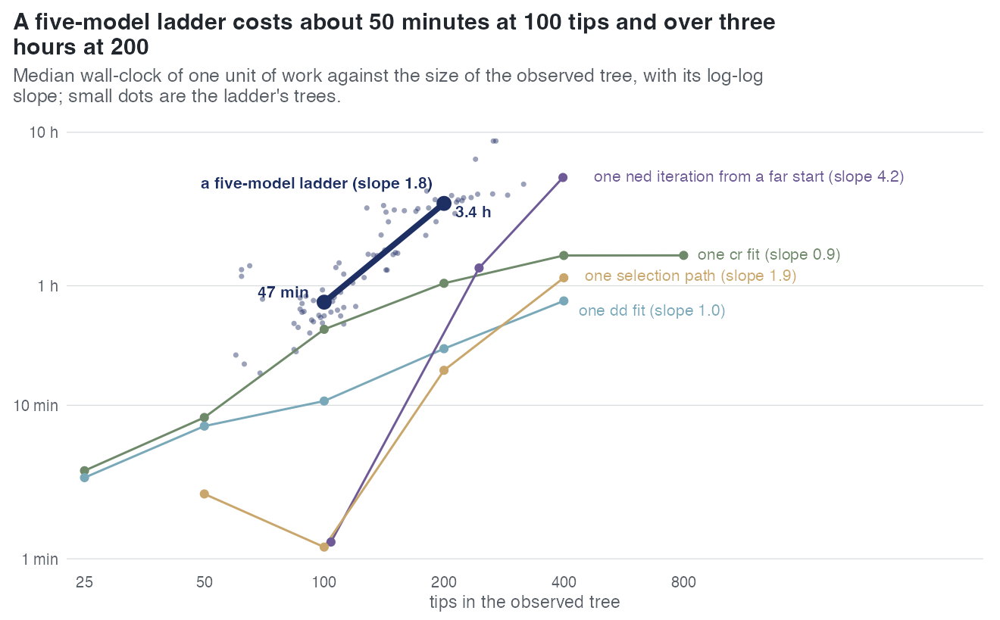

E15 — Where does the hour of a ned EM iteration go?
| Status | profile complete (3 rows, one tree per size); the draw-schedule arm of the design was not run and has no data; historical: a method-development step; not a current result (its finding, that the time of a fit is in its starting point, was adopted as the ladder's nested starts, E23) |
| Package build | library e8, installed at 4f42b27 on 2026-09-20; the build audit found that library identical to a clean build except ned on the thinning proposal |
| Driver / analysis | sim/E15-profile.R; figures sim/figures-e15e18.R, sim/figures-study.R |
| Data | results/E15/profile.csv (3 rows) |
Question
A ned EM iteration cost 40-60 minutes at 200-400 tips on the trees of E12's -0.35\(\lambda\)0 cells (design entry). E15 splits one iteration into its parts — the augmentation, the ED tables (quadratic in the augmented tree), the M-step — and was to test the cheap lever that E13 suggested: per-iterate noise falls as 1/√draws and early iterations do not need the precision, so a draw schedule of 100 draws for the first 100 iterations and 600 after might cut the cost.
Design
| parameter | value | meaning |
|---|---|---|
| trees | one per size, from E12's -0.35\(\lambda\)0 design (results/E12/design.rds), accepted when within 0.6-1.6 times the target |
target 100, 200, 400 tips; realised 104, 245, 398 |
| generating rates | \(\beta\)0 = 0.5, turnover 0.10, crown age 15, ED effect -0.35 \(\beta\)0 | |
| draws | 600 | |
| proposal | surrogate | |
| parts timed | (a) augmentation: 600 draws at the generating values; (b) first likelihood evaluation, which builds the ED tables for every augmented tree; (c) a second evaluation at a nudged parameter (tables cached: the per-evaluation cost the M-step pays); (d) one whole EM iteration through estimate_rates() from the study box's starting point |
|
| threads | 1 |
The designed second arm, the draw schedule (100 draws for 100 iterations, then 600), is not in the driver on disk and has no data.
Pre-set rule
At 200 tips, \(\hat{\beta}\)_ED within 0.9 of its generating value inside four hours under the schedule. If the ED tables dominate the profile, the schedule cannot help (the tables are built per tree, not per draw), and that is reported as the answer.
Results
| target tips | tips | augmented nodes (median) | simulate (s) | augment 600 draws (s) | first likelihood (s) | cached likelihood (s) | one whole EM iteration from the box |
|---|---|---|---|---|---|---|---|
| 100 | 104 | 151 | 0.12 | 13.5 | 0.30 | 0.29 | 77 s |
| 200 | 245 | 368 | 0.30 | 45.5 | 1.38 | 1.32 | 4703 s = 78 min |
| 400 | 398 | 539 | 0.48 | 73.6 | 0.072 | 0.072 | 18 270 s = 5.1 h |
The parts at the generating parameters sum to under two minutes at every size. The first likelihood evaluation costs the same as the cached one (0.30 vs 0.29 s, 1.38 vs 1.32 s), so building the ED tables is not the cost. The whole iteration from the box costs 5, 97 and 245 times the sum of the parts at 100, 200 and 400 tips. The 400-tip likelihood evaluations at 0.07 s are below the 245-tip ones at 1.3 s, as read from the file; the record gives no explanation. The log-log slope of the whole iteration against tips is 4.2.

Per-fit and per-workflow cost, for scale (from the experiments that recorded them; medians): a cr fit with draws grown 225 s at 25 tips to 95 min at 400-800 tips, a dd fit 203 s to 48 min at 400 (S, 28 workers sharing a host); one selection path over N, D, ED after a 3000-draw augmentation 1.2 min at 100 tips, 17 min at 200, 68 min at 400 (E20, E22; slope 1.9); a five-model ladder 47 min at 100 tips and 3.4 h at 200 (E23; slope 1.8).

ned iteration from a far start (slope 4.2) rises fastest; a five-model ladder costs about 47 minutes at 100 tips and 3.4 hours at 200.Conclusion
The rule's schedule half is not evaluable: the schedule arm was not run. The profile answers the design's conditional question in a third way: neither the ED tables nor the draws dominate. The augmentation, the table build and the per-evaluation cost at the generating parameters together take under two minutes at every size, while one iteration from the box takes 77 s, 78 min and 5.1 h. What the whole iteration does that the parts do not is start from the box: its E-step augments the clade the initial parameters imply. The record states "the hour is in the starting point" and, from this, that a draw schedule cannot shorten a ned fit because the draws are not the cost — a statement reasoned from the profile, not measured. The consequence adopted later: each rung of the model ladder starts from the estimate of the model it nests (E23 design). With one tree per size these are single measurements, not medians.